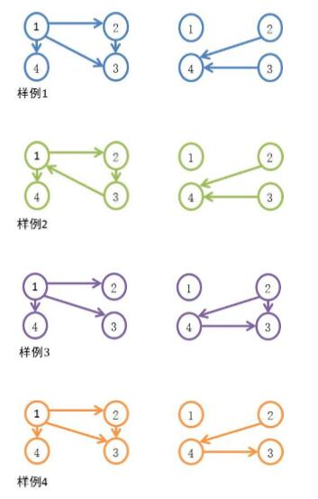

HDU5961. 传递
内存限制：12000/6000 MS (Java/Others) 时间限制：65536/65536 K (Java/Others)
题目描述
我们称一个有向图G是传递的，当且仅当对任意三个不同的顶点a,,若G中有 一条边从a到b且有一条边从b到c ,则G中同样有一条边从a到c。
我们称图G是一个竞赛图，当且仅当它是一个有向图且它的基图是完全图。换句 话说，将完全图每条边定向将得到一个竞赛图。
下图展示的是一个有4个顶点的竞赛图。

现在，给你两个有向图P = (V,$E_p$)和Q = (V,$E_e$)，满足:
1. $E_P$与$E_e$没有公共边；
2. (V,$E_p \bigcup E_e$)是一个竞赛图。
你的任务是：判定是否P，Q同时为传递的。
我们称图G是一个竞赛图，当且仅当它是一个有向图且它的基图是完全图。换句 话说，将完全图每条边定向将得到一个竞赛图。
下图展示的是一个有4个顶点的竞赛图。
现在，给你两个有向图P = (V,$E_p$)和Q = (V,$E_e$)，满足:
1. $E_P$与$E_e$没有公共边；
2. (V,$E_p \bigcup E_e$)是一个竞赛图。
你的任务是：判定是否P，Q同时为传递的。
输入格式
包含至多20组测试数据。
第一行有一个正整数，表示数据的组数。
对于每组数据，第一行有一个正整数n。接下来n行，每行为连续的n个字符，每 个字符只可能是’-’,’P’,’Q’中的一种。
$\bullet$如果第i行的第j个字符为’P’，表示有向图P中有一条边从i到j;
$\bullet$如果第i行的第j个字符为’Q’，表示有向图Q中有一条边从i到j;
$\bullet$否则表示两个图中均没有边从i到j。
保证1 <= n <= 2016，一个测试点中的多组数据中的n的和不超过16000。保证输入的图一定满足给出的限制条件。
第一行有一个正整数，表示数据的组数。
对于每组数据，第一行有一个正整数n。接下来n行，每行为连续的n个字符，每 个字符只可能是’-’,’P’,’Q’中的一种。
$\bullet$如果第i行的第j个字符为’P’，表示有向图P中有一条边从i到j;
$\bullet$如果第i行的第j个字符为’Q’，表示有向图Q中有一条边从i到j;
$\bullet$否则表示两个图中均没有边从i到j。
保证1 <= n <= 2016，一个测试点中的多组数据中的n的和不超过16000。保证输入的图一定满足给出的限制条件。
输出格式
对每个数据，你需要输出一行。如果P! Q都是传递的，那么请输出’T’。否则， 请输出’N’ (均不包括引号)。
样例
样例输入
4
4
-PPP
--PQ
---Q
----
4
-P-P
--PQ
P--Q
----
4
-PPP
--QQ
----
--Q-
4
-PPP
--PQ
----
--Q-样例输出
T
N
T
N
Hint
在下面的示意图中，左图为图为Q。

注：在样例2中，P不是传递的。在样例4中，Q不是传递的。